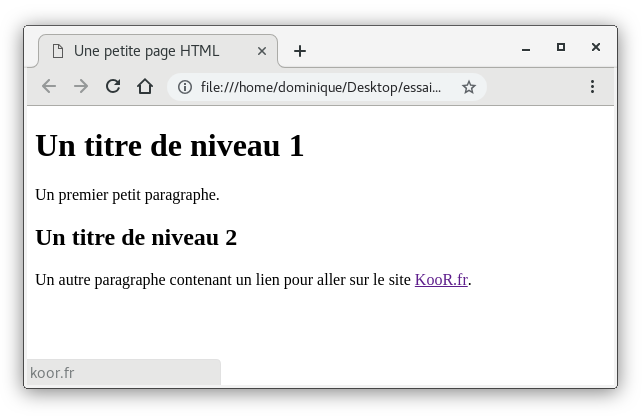
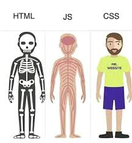

DES TECHNOLOGIES FRONT END
1. HTML
Le HTML ou langage de balisage hypertexte est généralement utilisé pour développer des sites web, des pages web et des applications web. Après sa sortie initiale en 1993, il a été constamment mis à jour pour ajouter de nouvelles fonctionnalités. La dernière version de HTML5 est arrivée cette année. Les développeurs novices préfèrent commencer leur carrière de programmeur frontend à partir de HTML.
Fonctionnalités principales
Largement compris –
Le HTML est toujours préféré à un autre programme pour le développement d’un code backend. C’est simplement parce qu’elle est simple, petite et largement comprise.
Facile à apprendre et à mettre en œuvre –
Il s’agit d’un langage gratuit et facile à comprendre. Il n’est pas difficile d’utiliser ce langage avec une implémentation donnée. Plus important encore, il est directement compris par tout navigateur sans qu’il soit nécessaire de le masquer avec un autre langage frontend.
Intégration transparente avec d’autres langues –
Il est possible d’éditer sans effort le code d’une autre langue. Il peut être intégré rapidement à tout autre code ou formulaire. De nombreux programmeurs qui ont une connaissance de n’importe quel langage frontend ou backend ont utilisé le HTML.
Test et débogage faciles –
Il est convivial et facilement compréhensible par un utilisateur, même si une erreur est commise dans la mise en page ou le formatage. C’est également l’un des langages frontend les plus légers actuellement disponibles.

2. CSS
CSS est un autre des meilleurs langages frontend. Les feuilles de style en cascade sont essentiellement un outil de conception Web utilisé pour contrôler la mise en page d’une page Web. CSS est un style en cascade distinct qui fonctionne dans le frontend. Le CSS est en fait un petit fichier qui copule avec le backend.
Ainsi, cela permet de s’assurer que le langage frontend comprend parfaitement le code et la manière dont il fonctionne. Il est apparu en 1996, un an après JavaScript, et a été développé par le W3C.
Fonctionnalités principales
Framework de style en cascade – Cela peut être avantageux pour les différentes pages Web qui ont beaucoup de types différents de contenu ou de charge de conteneur.
Moins de charge sur le fichier HTML –
Ceci peut être utilisé avec le code HTML pour mettre en cascade le fichier HTML et son contenu afin de permettre une moins grande charge sur le code HTML.
Richesse fonctionnelle –
Les CSS offrent de nombreuses fonctions en matière de style de texte, de polices et de couleurs. Il peut contrôler l’aspect et la convivialité de l’ensemble de votre page Web à l’aide d’une simple taille et d’une couleur de police.
Prise en charge par plusieurs navigateurs –
CSS assure la prise en charge par plusieurs navigateurs et permet au navigateur de comprendre le placement et l’exécution efficace du code.
Favorise l’uniformité à travers les plateformes –
Ce langage de programmation frontal garantit que le contenu et les données sont dans la bonne syntaxe. Il y a donc moins de place pour les erreurs dans le contenu et la lisibilité.

3. JAVASCRIPT
JavaScript est présent sur le marché depuis bien plus longtemps. Il s’agit de l’un des mécanismes les plus couramment utilisés pour le développement frontend, aux côtés de HTML et CSS. Il s’agit d’un langage simple, facile à comprendre, à apprendre et à mettre en œuvre. Il est supporté par beaucoup d’autres langages de backend.
Il est apparu pour la première fois en 1995 et s’est beaucoup amélioré. W3Techs affirme que 97,4 % des applications Web utilisent JavaScript comme langage frontend. En effet, des applications connues telles que Netflix et Uber utilisent également JavaScript.
Fonctionnalités principales
Architecture côté client – Elle utilise un modèle « côté client », ce qui signifie qu’elle réduit la charge sur le serveur et est très rapide en fonction des ressources du client.
Conception riche en fonctionnalités –
Elle peut être utilisée pour créer des interfaces très intrigantes et attrayantes. Il prend en charge plusieurs bibliothèques externes, ce qui ajoute à ses fonctionnalités.
Prise en charge d’un large éventail de langues –
Elle prend en charge le langage HTML et peut facilement être utilisé en cascade pour gérer le contenu. De plus, il peut être programmé pour récupérer des données à partir de sources ou de moyens multiples.
Contrôles de sécurité –
JavaScript nécessite un cryptage et des contrôles de sécurité appropriés dans le code en tant qu’architecture « côté client ». Il indique que le code va au client, ce qui peut facilement être violé si le code n’est pas correctement crypté
